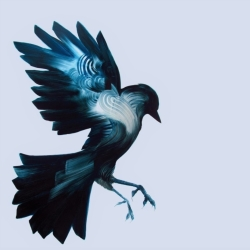
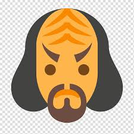
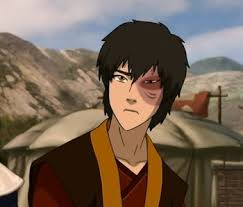
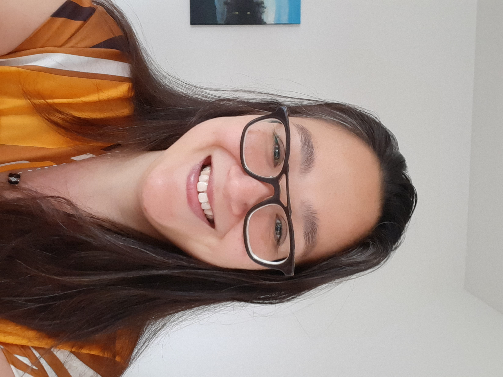
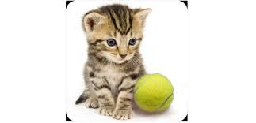
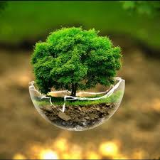
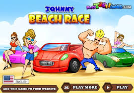
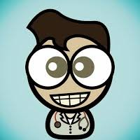

Akif is 1 van de docent assistenten bij Winc Academy. Op dit moment studeert hij aan de Technische Universiteit Delft. Hij staat altijd klaar om te helpen.

Akif
ExampleWebsite.com
Arnold Zijler is een vriendelijke man van 52. In het verleden supportmedewerker geweest waarbij hij veel contact met klanten had, hij hielp hun met de voorkomende problemen en deze ook documenteerde in verslagen. Op den duur was dit veel van hetzelfde en besloot hij de overstap te maken. Zelf al bezig geweest met onder andere python, js en php, vind het leuk om ...
Arnold
ExampleWebsite.com
Darya is 33 jaar en woont in Rotterdam en is single en heeft geen huisdieren. Rotterdam vind ze een levendig centrum. Verder heeft ze 2 zussen en een broertje. Waarom ze de opleiding doet is omdat ze vast zat in haar huidige banen en meer toekomst perspectief wilt en haar vrienden ook programmeren.
Darya
ExampleWebsite.com
Glen is 35 jaar en is vrijgezel. Hij heeft hiervoor 5 jaar leiding gegeven aan 15 man bij een transportbedrijf. Vanaf jongs af aan heeft hij interesse in computers. Hij heeft eerder een druk gezinsleven gehad met vriendin en haar twee kinderen. Hij ziet de kids nog elke week. Nu tijd voor programmeren. Hobby's: autorijden, reizen, programmeren, cryptografie...
Glen
ExampleWebsite.com
Gregor woont ook in Leiden en is na de middelbare school meteen naar Engeland vertrokken om een half jaar Engels te studeren, maar vooral om te feesten. Terug in Nederland heeft hij bij een uitzendbureau gewerkt, ONK en deed hij controles. Daarna werkte hij in de organisatie van een cateringbedrijf, maar helaas ging dat bedrijf failliet vanwege de Coronacrisis. Gregor wordt gelukkig van...

Gregor
ExampleWebsite.com
Hans is vader van 2 kinderen, waarvan de jongste nog een heel lastig slaappatroon heeft. Heeft tot eind juli bij knsb schaatsbond gewerkt als project en product manager. Heeft helaas zijn baan verloren door faillissement door de corona-maatregelen.
Hans
ExampleWebsite.com
Joey is 1 van de docent assistenten bij Winc Academy. Hij heeft zijn eigen bedrijf.
Joey
ExampleWebsite.com
Lawrence is 45 en woont in Apeldoorn. Hij heeft een zoon van vier. Hij is opgegroeid in Rotterdam in een gezin met 2 broers en één zus. Hij heeft hiervoor een ondernemersopleiding gedaan en gewerkt als ZZP-er in de financiële sector. Zijn hobby's zijn hardlopen en mountainbiken in het bos.
Lawrence
ExampleWebsite.com
Lin Ny is 40 jaar jong. Ze woont samen met haar man en hun 2 meiden van 10 en 12 jaar oud. Haar hobby's zijn zingen, dansen, diamant painting en programmeren (heden). Verder heeft ze gewerkt als doktersassistente en weet ze dus precies hoe het wel en niet werkt met teveel koffie drinken. Haar goede eigenschappen zijn Enthousiasme, Eerlijkheid en...
Lin Ny van Feggelen
ExampleWebsite.com
Sinds een half jaar is Luc docent bij Winc Academy. Hij heeft al 12 jaar programmeerervaring.

Luc
ExampleWebsite.com
Lydia woont in leiden en heeft Chinese taal en cultuur gestudeerd. Daarna heeft ze gewerkt als tolk vertaler voor de overheid (IND, politie, rechtbank, enz...). Ze is opzoek naar iets nieuws omdat er geen toekomst in tolken is omdat de overheid het onaantrekkelijk maakt. Lydia heeft gekozen voor front-end dev omdat ze houd van puzzelen en ze vind het leuk dat je nooit bent...
Lydia
ExampleWebsite.com
Niels is de hoofd docent bij Winc Academy. We zien zijn gezicht regelmatig..tijdens de meetings en soms zelfs in de voorbeelden in de opdrachten. Wanneer hij niet gesloopt is van onze Class_of_17_augustus_2020 zet hij graag animated gif op Slack.
Niels
ExampleWebsite.com
Nodha (33), is de man die altijd klaar voor zijn vrienden staat. Heb je een taxi nodig, hij brengt je zo in zijn luxe Volkswagen golf uit 2012. En is hij er een poosje niet, dan zit hij waarschijnlijk in Griekenland, vlakbij Athene waar hij nog een huis heeft en waar zijn familie roots liggen. Hij heeft een broer en zus en broer.
Nodha
ExampleWebsite.com
Sander de Jongh is geboren in Voorburg, opgegroeid in Scheveningen en Hendrik Ido Ambacht Hij woont nu sinds 2 jaar met zijn vriendin in Nieuw Lekkerland Hij was zelfstandig kok, maar door de coronacrisis was daar geen werk meer in. Dit was een goede aanleiding om zijn droom door te zetten om webdeveloper te worden; hiermee was hij 2 jaar geleden al een klein beetje...
Sander aka Alexander
ExampleWebsite.com
Sander is 31 jaar oude woont in amsterdam in een studio vlak bij het westerpark. Hij heeft ook een boot in zijn bezit en verhuurd soms de boot via zijn website. op dit moment zijn ze bezig met het verbouwen van het pand waar hij woont, en soms geeft dat wat geluid overlast.

Sander
ExampleWebsite.com
Sebas heeft een opleiding ict aplicatie gedaan 6 jaar geleden. havo proggrameren. komt heel vriendelijk over, en had het heel veel naar zijn zin op zijn werk als troubleshooter met veel verantwoordelijkhedeb, maar zou graag meer willen weten om zelf programma inelkaar te zetten.
Sebas
ExampleWebsite.com
Tatjana woont in Maartensdijk, vlakbij de Bilt. Ze komt oorspronkelijk uit Rotterdam en woont al acht jaar samen met haar vriend en heeft twee kinderen. Ze heeft Europese studies gestudeerd en hier Duits geleerd, maar ze heeft pools geleerd omdat haar stiefmoeder Pools is en ze Polen dus weleens bezoekt. Haar familie komt uit Joegoslavië, vandaar de...
Tatjana
ExampleWebsite.com
Tristan is 24 jaar, woont als vrijgezel in Amsterdam, maar is opgegroeid is Bussum. Heeft 1 broertje die 10 jaar jonger is. Heeft een opleiding gevolgd tot maritiem officier maar is daarmee gestopt en vervolgens gaan reizen door de VS en Mexico. WIlt in de toekomst graag leren zeilen, een zeilboot kopen en een reis maken van Brazilie naar Cuba en als eindstation New Orleans. Een muzikale trip...
Tristan
ExampleWebsite.com